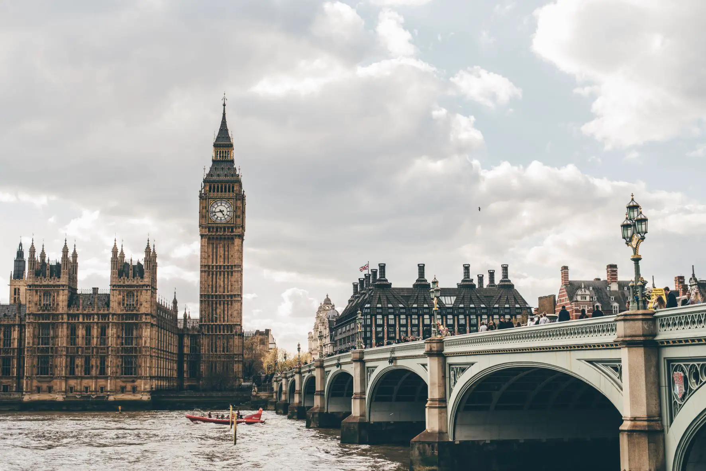
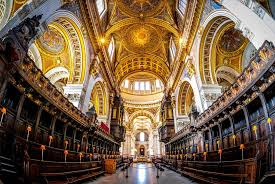

|  |

|
|---|
Not sure where to start first on your historical deep-dive of London? We have hand selected some of the most popular tourist attractions that help visitors feel completely immersed in London's rich history.
Westminster Abbey is a church located within the heart of London. The Gothic Church was first built in 960 AD, and was later rebuilt during the rule of Henry III in the 13th Century. The most noteable aspect of Westminster Abbey would be its complex and beautiful architecture with things such as stained glass windows, towering spires, and the detail in each stone carving. Westminster Abbey is well known for hosting a variety of important occasions for Britain's royal family. Some of these events include coronations, weddings, and funerals.
To add to its royal significance, the church also serves as the final resting place for a wide range of noteable figures throughout British history. Aside from members of the royal family, other figures include statesmen like Winston Churchill, poets like Geoffery Chaucer, and scientists like Isaac Newton.
In order to book your tickets in advance, go to the official Westminster Abbey website and choose a time, date, and package that suits your preferences.
| Weekday | Time |
|---|---|
| Monday - Friday | 9:30am-3:30pm |
| Saturday | 9:00am-3:00pm |
| Sunday | Only open for worship |
| Cateogry | Price |
|---|---|
| Child Ticket | £12.00 |
| Concession Ticket | £24.00 |
| Senior Ticket | £24.00 |
| Adult Ticket | £27.00 |
Vistors are completely welcome to attend and participate in the church services taking place at Westminster Abbey. These services typically include the morning prayers, holy communion, eucharist, and evensong. It is also important to keep in mind that there are some services throughout the year that occur on an invitation-only basis, meaning tickets would need to be booked in advance.
Buckingham Palace serves as the official place of residence for the British monarchy, as well as an adminstrative space for the royal family as a whole. The palace was originally built in 1703 during the time of the Duke of Buckingham, and eventually became a home for the royal family in 1837 for Queen Victoria's reign. Buckingham Palace has gone through numerous upgrades and expansions over the decades. One of the most noteable ones would be the grand balcony where the royal family stands and greets the crowd during major events. To add to the palace's adminstrative purposes, it serves as the host for many state functions and ceremonial events throughout the year.
The palace becomes an exceptionally popular tourist extraction during the summer months because that is the time when certain areas of the palace are open to the public. One particularily popular sight tourists enjoy would be the Changing of the Guard Ceremony, which has become a staple in British royal culture.
As it stands right now, the next batch of tours for the Buckingham Palace State Rooms are scheduled for July 10 - September 28, 2025.
Countdown to Start Date:
| Cateogry | Price in Advance | Price on the Day |
|---|---|---|
| Adult | £32.00 | £35.00 |
| Young Person (18-24 years old) | £20.50 | £22.50 |
| Child (5-17 years old) | £16.00 | £17.50 |
| Person(s) With a Disability | £16.00 | £17.50 |
| Access Companion | Free | Free |
| Under 5 years old | Free | Free |
| Days (July 10 - September 28) | Hours |
|---|---|
| Monday | 9:30am-7:30pm |
| Tuesday | 9:30am-7:30pm |
| Wednesday | 9:30am-7:30pm |
| Thursday | 9:30am-7:30pm |
| Friday | 9:30am-7:30pm |
| Saturday | 9:30am-7:30pm |
| Sunday | 9:30am-7:30pm |
Tours occur on a timed admission basis, so it is of utmost importance that people arrive no later than 10 minutes before their scheduled tour time. Those who arrive late might not be able to join the tour.
Because of the popularity of the tour and the vast size of the palace, tours of Buckingham Palace can take anywhere between two or three hours.
Tours of the palace are suitable for those with a disability. There are accessible bathrooms and wheelchair ramps throughout the tour, and people have the ability to rent a wheelchair at the palace for free. If you are doing so, it is advised to rent the wheelchair in advanced.
No, photography is not allowed inside of the palace State Rooms. That being said, there are certain areas outside of Buckingham Palace where taking photos is permitted.
St. Paul's Cathedral serves as one of the most iconic landmarks in all of London. The church, which is highly regarded for its complex architecture and artistry, was built by Sir Christopher Wren in 1710 after the first church was destroyed during the Great Fire of London. The cathedral perfectly encapsulates the Baroque style with its grand dome, mosaics, and sculptures.
The cathedral has also been the site of a wide range of notable events in British history. Some of these include the wedding of then Prince Charles and Lady Diana Spencer, peace services to mark the end of World Wars I and II, Jubilee celebrations, as well as the funerals for British figures such as Winston Churchill, Margaret Thatcher, and Queen Elizabeth, The Queen Mother. When tourists go to visit, they can see the Golden Gallery to experience a brand new and unique view of London.
Vistors are able to make their way down to the crypt in order to get a closer look at the resting place and memorials for some of Britain's greatest figures.
Another area of interest would be the Stone and Gold galleries, which provides guests with additional breathtaking views of London. Visits inside the Stone and Gold Galleries and dependent on availability.
Because St. Paul's is an active place of worship, all visitors all welcome to attend a service for free. The services include morning service, holy communion, eucharist, and evensong. In addition to regular church services, the cathedral hosts a number of special services throughout the year. In such scenarios, tickets must be booked in advance.
| Weekday | Hours |
|---|---|
| Monday | 8:30am-4:30pm |
| Tuesday | 8:30am-4:30pm |
| Wednesday | 10:00am-4:30pm |
| Thursday | 8:30am-4:30pm |
| Friday | 8:30am-4:30pm |
| Saturday | 8:30am-4:30pm |
In order to book tickets in advance, go to the official Visit London website in order to find a time and date that best suits your preferences.
| Category | Price |
|---|---|
| Adult | £20.50 |
| Senior | £18.40 |
| Concession | £18.40 |
| Child | £9.00 |
St. Paul's Cathedral does have a gift shop where visitors can purchase souveniors and trinkets that capture the breathtaking nature of the church. Some items include CDs of the church choir, scarves, and jewelry pieces created from actual stones from the cathedral.
London's Tower Bridge is a suspension bridge that goes over the River Thames. The bridge was built in 1894, and its main purpose was to try and mitigate the heavy amounts of traffic, while also giving ships a space to pass through to the busy port in London. The great Victorian-styled twin towers of the brige stand tall and serve as a reminder of London's rich history in engineering progress. Because the roadways of the bridge can be raised up high, bigger ships are also able to pass through to the ports.
Those who visit the Tower Bridge can take part in an interactive tour that gives a meanigful insight about the history and engineering of the bridge by getting the opportunity to walk through the Towers and Engine Rooms. During the tour, visitors can go to the high-level walkways that provide an excellent view of the River Thames and the skyline of the surrounding area.
On average a tour of the Tower Bridge can take approximately 60 to 90 minutes.
In order to purchase tour tickets in advance, go to the official Visit London website in order to find a time and date that suits your needs.
| Category | Price |
|---|---|
| Adult | £13.40 |
| Senior | £10.10 |
| Concession | £10.10 |
| Child | £6.70 |
The last entry for the Tower Bridge ends at 5:00pm.
| Weekday | Hours |
|---|---|
| Monday | 9:30am-6:00pm |
| Tuesday | 9:30am-6:00pm |
| Wednesday | 9:30am-6:00pm |
| Thursday | 9:30am-6:00pm |
| Friday | 9:30am-6:00pm |
| Saturday | 9:30am-6:00pm |
| Sunday | 9:30am-6:00pm |
NOTICE: On the second Saturday of each month, the Tower Bridge is reserved from 9:30am-11:30am for those attending the Relazed Opening. This is a periof of time where guests are welcome to stay for as long as they want.